My role
- Defined the product strategy in collaboration with PMs and stakeholders.
- Led end-to-end design efforts, from research to prototyping and usability testing.
- Facilitated cross-functional alignment between design, engineering, and business teams.
- Mentored a junior designer and spearheaded design critiques to align on quality.
Teampact helps teams improve collaboration through performance metrics, but users found the platform overly complex and time-consuming to navigate.
Key issues included low survey completion rates (60%), high onboarding drop-off (25%), and poor adoption of team insights features.
My goal was to streamline the user experience and align it with business goals to drive engagement and retention.
Simplifying Onboarding
- Challenge
25% of users dropped off during onboarding due to lengthy forms and unclear next steps.
- Solution
- Conducted usability tests to identify pain points in onboarding.
- Redesigned onboarding into less step process with contextual tooltips and progress indicators.
- Outcome
- Reduced onboarding time from 7 minutes to 3 minutes.
- Drop-off rate decreased from 25% to 10%.
Boosting Survey Completion Rates
- Challenge
Users struggled to complete surveys due to confusing navigation and lack of motivation.
- Solution
- Streamlined survey flows and added progress bars for better clarity.
- Designed gamified elements like badges for survey completion.
- Outcome
- Survey completion rates increased from 60% to 80%.
Increasing Adoption of Team Insights
- Challenge
Only 40% of users utilized the team insights feature, citing difficulty in finding relevant data.
- Solution
- Reorganized the dashboard to prioritize actionable insights and added data visualizations.
- Introduced filters and search functionality for customized reports.
- Outcome
- Feature adoption rose from 40% to 75%.
- Users spent 25% more time on the dashboard, driving engagement.
Other ux challenges identified
- Overwhelming Dashboard DesignThe dashboard was cluttered with data, leaving users confused about what to prioritize and how to navigate effectively.
- Low Engagement with SurveysFrequent surveys felt repetitive and uninspiring, leading to low completion rates and diminishing user insights.
- Generic Feedback ExperienceUsers felt the surveys lacked personalization, making the process feel mechanical rather than tailored to their team’s specific needs.
- Limited Actionable InsightsFeedback provided by the system lacked clear recommendations, making it hard for teams to translate data into meaningful actions.
- Insufficient Collaboration FeaturesThe tool did not effectively support team discussions or collaborative action planning, limiting its ability to drive meaningful teamwork improvements.
- Lack of Clarity in Team MetricsUsers struggled to understand how team performance was evaluated, as metrics were either overly complex or insufficiently explained.
Key Outcomes
- 20%User RetentionImproved overall user retention by 20%.
- 45 to 60Customer SatisfactionNPS increased from 45 to 60.
- 15%Business ImpactHelped achieve a 15% increase in subscriptions by enhancing usability and delivering value.
Takeaways
- Simplifying complex workflows drives both user satisfaction and business outcomes.
- Collaborative design critiques and mentoring were pivotal in aligning the team and elevating the overall quality of the product.
- Balancing user needs with business goals is essential for creating impactful designs at scale.
The full process
Research, decisions and iterations, step by step.
Discovery
The Research Team previously studied the "future of working." We found that employees faced challenges with performance assessments. We believe companies focused too much on individual performance, ignoring team dynamics and collaboration. Through workshops, journey maps, interviews, and "how might we" statements, we identified key areas to support users. The main issue users faced became our North Star.
The Process
We held workshops with all departments on the project to gather insights and data for deciding the next steps in creating potential solutions. Customer success, sales, product, and research teams participated, and after prioritizing and analyzing the information, we knew where to begin. I later used those concepts to create wireframes for user testing, refining them until a solid concept was ready to present to Haufe Group leadership.
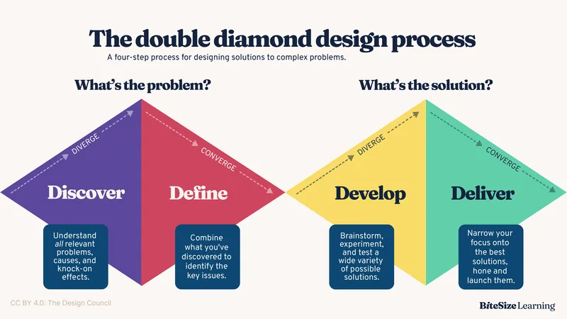
Data gathered from various stakeholders showed that users stopped using Teampact after a while. The process of Teampact was based on Assess, Reflect, and Improve. We decided to focus on Reflect, as users need to understand how to use the data.
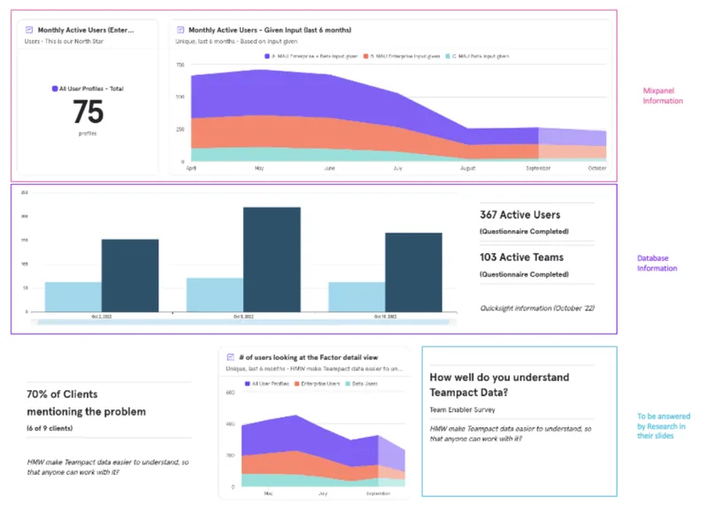
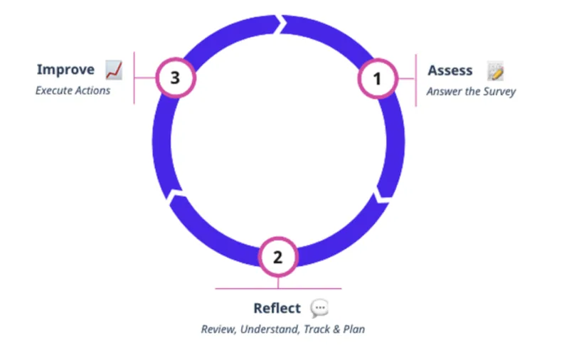
User Journey map
To create the journey map, we examined the team members' development. We identified different stages to focus on, particularly Stage 4, which centers on Retrospectives. We found that users can utilize data from retrospectives to improve their daily work.
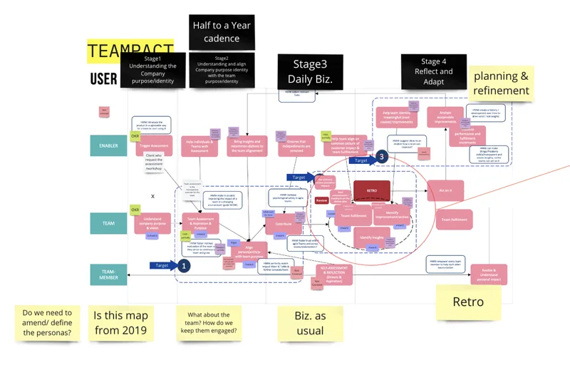
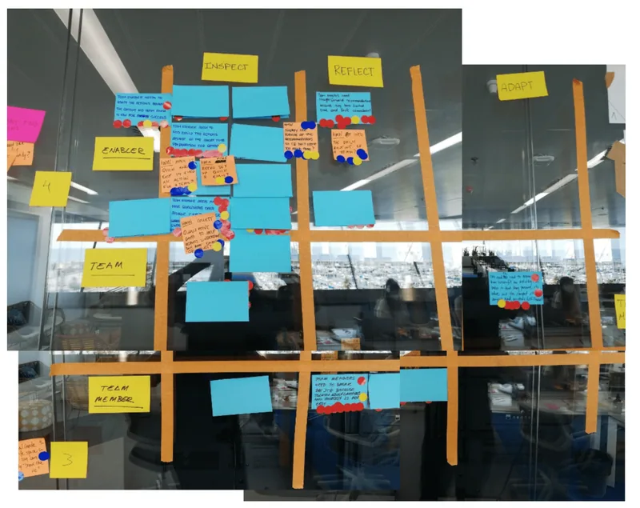
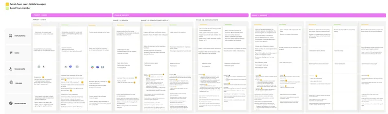
Concept
We began brainstorming ways to solve the problems we found in the chosen stages. We also looked at similar products to get ideas.
We came up with sketch ideas and did some crazy8s. After voting on the best ones, we started the storyboard and I then worked on the prototype.
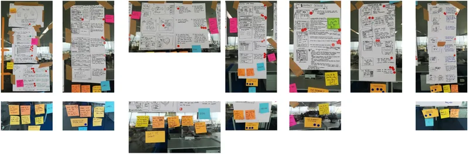
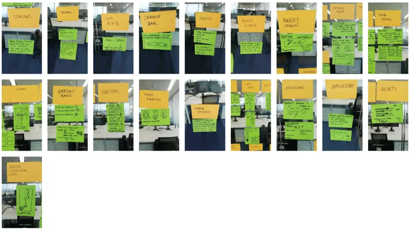
Concept validation
Before proceeding, we ensure the concept we select is suitable based on our insights by asking:
Does this concept make your current process for running retros and team development easier?
What is the main reason you would use this concept with your team?
Choosen Concept
We began with a focus on individual reflections in stage 4. This topic will shift to a team perspective. After gathering data, we will look at it from an organizational viewpoint, helping managers and HR understand team development. Managers can also suggest actions to enhance their teams.
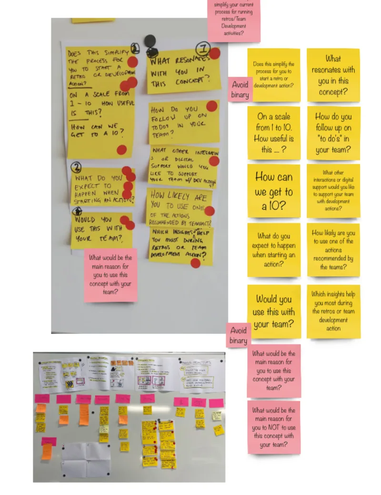
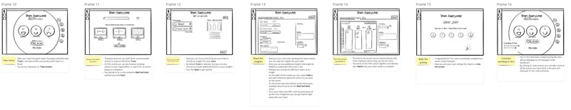
Iteration & workshop
We held interviews about the workshop, followed by onsite discussions with the research team and myself. We recognized we were on the right track but needed to do more. After several months of ongoing work and adjustments, we gathered insights and data to explore the topic further.
Since the project was new and in its early stages, we needed to develop more processes to address user needs and identify new opportunities. This led us to conduct another workshop to analyze the new insights gathered from interviews and stakeholders.
User Personas
With Research Team we created user personas to be able to focus more on the interviews, on who to tackle and to verify the storyboard.
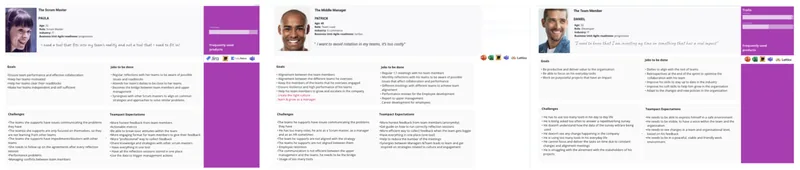
Storyboard
We made a simple storyboard sketch for testing and validating the concept. We focused on management's role as the user creating the retrospective.
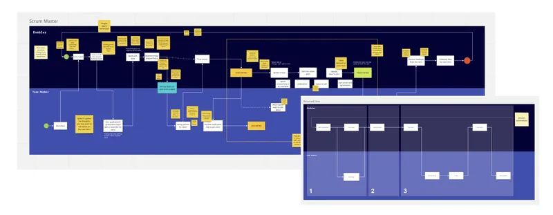
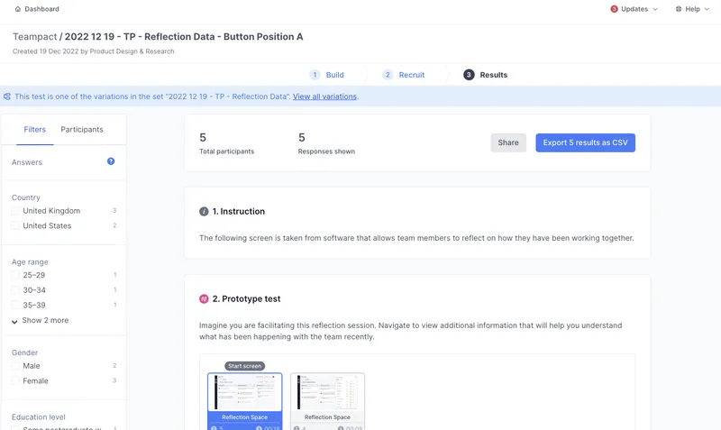
New Concept Ideation
With our user persona, user flow, user journey, and interview insights, I began prototyping. I worked on grasping the concept and creating low-fidelity prototypes.
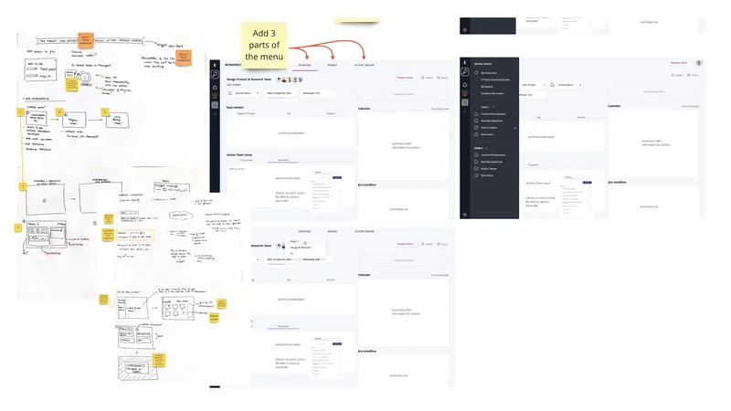
Competitive Analysis
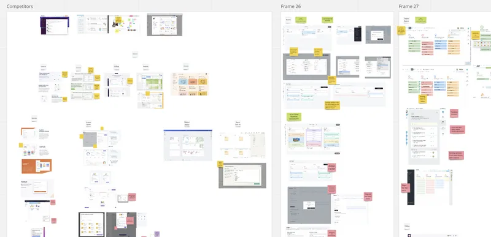
Interviews & Testing
We interviewed Scrum Masters, Managers, and Team Members (like developers) to understand their Retrospective process. We focused on three main areas: creating the retrospective and using surveys, gathering data, and running the retrospective.
After several interviews, we identified a market opportunity to use survey data during retrospectives, where there was little competition. This would enhance usage and help teams apply their knowledge effectively.
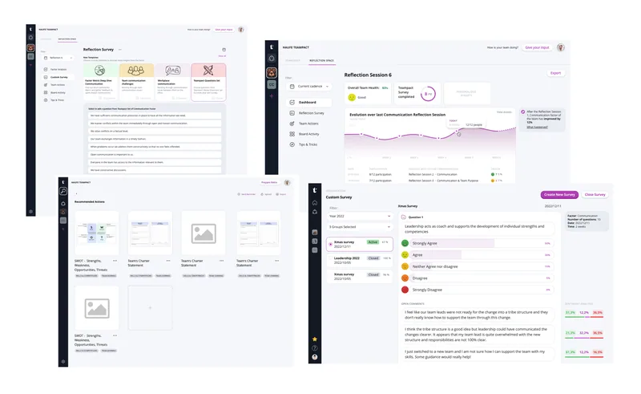
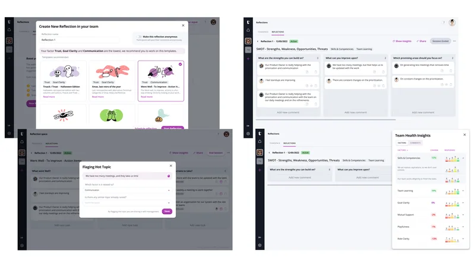
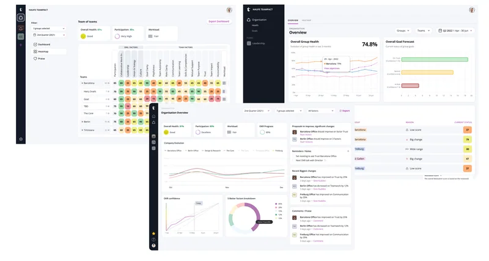
Final MVP
I was asked to create an MVP for leaders at Haufe Group. Once I had the main flow, I tested it using both moderated and unmoderated sessions. I focused on new users within Haufe Group since they’re already a target audience, making the process quicker.
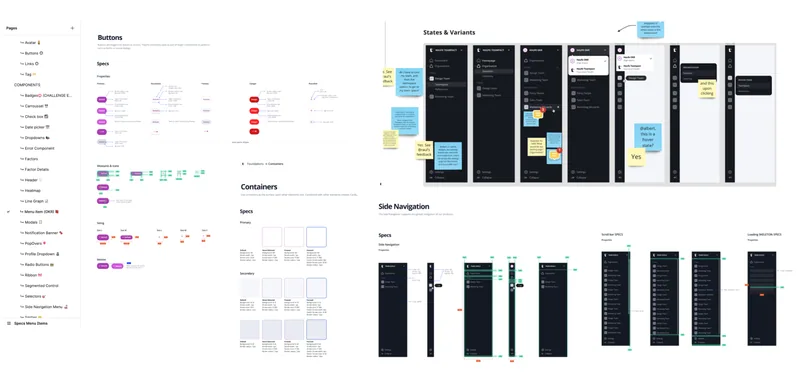
Video Creation
I made some videos with After Effects for interviews to introduce users who aren't familiar with the project.
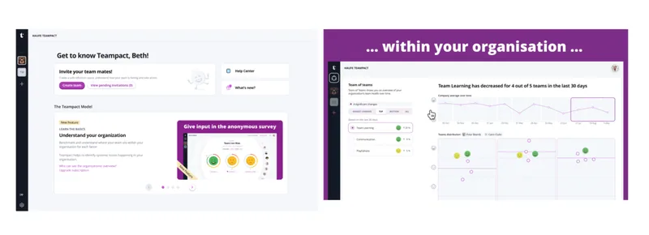
Design System creation
Working hand on hand with the Development Team with the Guild and creating a Design System to be used by 4 more designers from other projects.